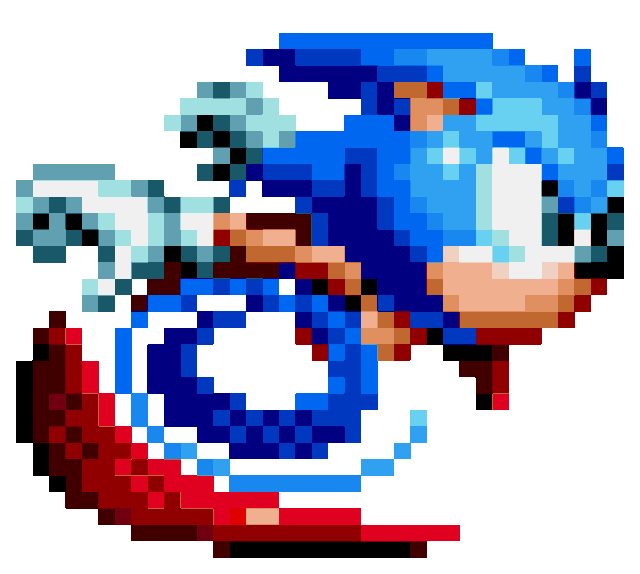
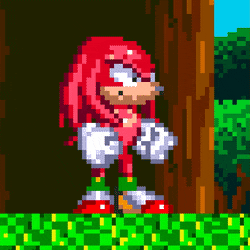
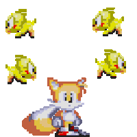
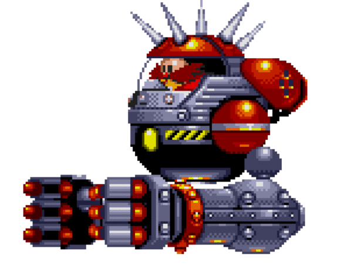

ESPAÇO — BLOCO TEXTO 01
O Universo Sonic
Sonic é uma das franquias mais marcantes da história dos
videogames. Desde suas primeiras aventuras, a série construiu
uma identidade própria baseada em velocidade, personalidade,
exploração e mundos cheios de desafios.
Suas fases apresentam ambientes variados, personagens
característicos, obstáculos e caminhos que incentivam o
jogador a descobrir novas possibilidades. Cada cenário
contribui para construir uma experiência que vai além
simplesmente chegar ao final da fase.
Observar o universo Sonic também é uma maneira de compreender
como direção artística, música, personagens e mecânicas podem
trabalhar juntos para criar jogos memoráveis.

ESPAÇO — BLOCO TEXTO 02
Movimentação e Física
Um dos elementos mais interessantes dos jogos do Sonic é a
maneira como o personagem se movimenta pelo cenário. A
velocidade não é apenas um recurso visual: ela influencia
diretamente a forma como o jogador interage com o ambiente.
Aceleração, desaceleração, inércia, gravidade, saltos e
colisões são elementos fundamentais para construir essa
sensação de movimento. A combinação desses fatores determina
como o personagem responde aos comandos e como atravessa
diferentes tipos de terreno.
Estudar essas mecânicas permite compreender a importância
da física em um jogo de plataforma e como pequenos ajustes
podem transformar completamente a experiência de controle.

ESPAÇO — BLOCO TEXTO 03
Level Design
As fases de Sonic demonstram como o desenho de um cenário
pode influenciar o ritmo e as decisões do jogador. Rampas,
plataformas, curvas, obstáculos e caminhos alternativos
transformam o ambiente em parte essencial da jogabilidade.
Um bom level design não consiste apenas em distribuir
obstáculos pelo mapa. É necessário pensar na progressão
dos desafios, na liberdade de exploração, na recompensa
pela habilidade e na maneira como cada elemento interage
com a movimentação do personagem.
Analisar essas estruturas é uma oportunidade de aprender
como construir fases interessantes, equilibrando velocidade,
exploração, dificuldade e diversão.

ESPAÇO — BLOCO TEXTO 04
Criação de Jogos
Desenvolver um jogo envolve muito mais do que programar
personagens ou criar cenários. É um processo que reúne
lógica, criatividade, arte, áudio, planejamento e resolução
de problemas.
O universo Sonic serve como uma referência interessante
para estudar diferentes aspectos do desenvolvimento:
sistemas de movimentação, interação com o ambiente,
construção de fases, animações e organização de elementos
que formam a experiência do jogador.
Meu interesse em GameDev está justamente em explorar essas
possibilidades, compreender como os jogos são construídos
e utilizar esse conhecimento para desenvolver experiências
próprias, transformando ideias em mundos jogáveis.